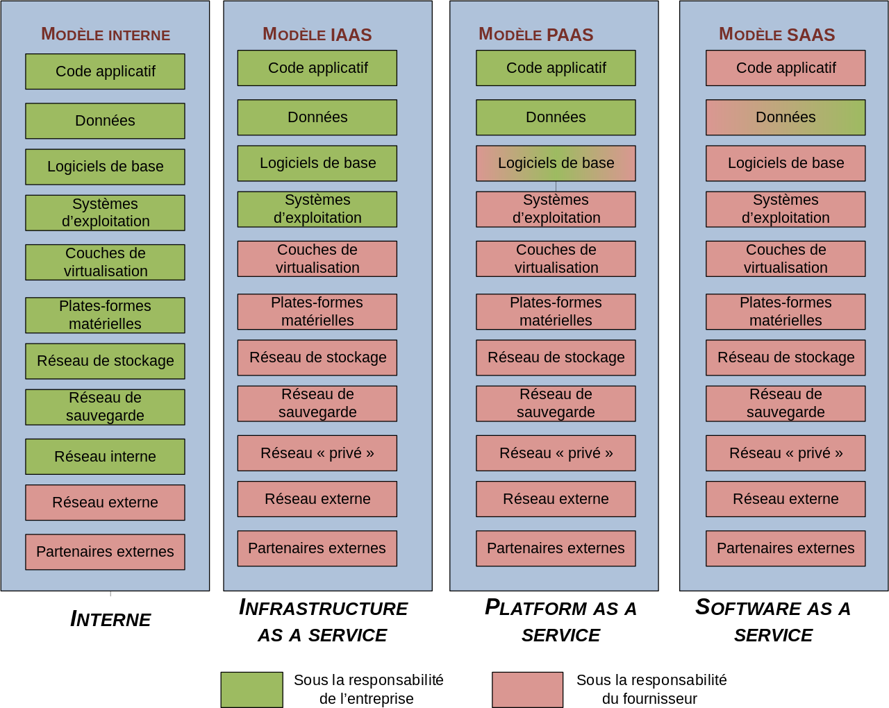
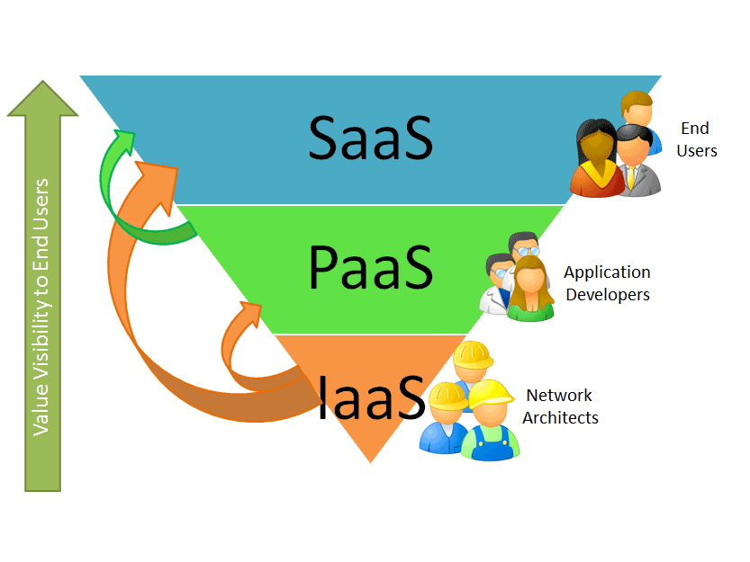

Virtualisation et Cloud
Explication, démystification
Une présentation de Gauthier C.
En 30 minutes
- Histoire de la virtualisation
- Concepts et solutions de virtualisation
- Le Cloud Computing
- Infrastructure as a Service
- Plateform as a Service
- Software as a Service
Histoires de la virtualisation
Une vieille histoire
- Mis au point dans les années 60 pour les mainframes.
- Le partitionnement constituait un moyen naturel de tirer pleinement parti de l’investissement matériel.
- Abandonnée au cours des années 1980 et 1990.
Retour sur x86
- Besoin de consolidation des serveurs x86 (utilisation 10 à 15%)
- Coût de migration, manque de fléxibilité
- x86 non prévu pour la virtualisation
Concepts et solutions de virtualisation
Hyperviseur de type 2

Hyperviseur de type 2
- logiciels Microsoft (Microsoft VirtualPC, Microsoft Virtual Server)
- logiciels Parallels (Parallels Desktop, Parallels Server)
- logiciel Oracle VM VirtualBox (libre)
- logiciels VMware (VMware Fusion, VMware Player, VMware Server, VMware Workstation)
- logiciels libres (QEMU : émulateur de plateformes x86, PPC, Sparc, et bochs : émulateur de plateforme x86).
Hyperviseur de type 1

Hyperviseur de type 1
- Citrix Xen Server (libre)
- VMware ESXi (gratuit)
- Microsoft Hyper-V Server
- Parallels Server Bare Metal
- KVM (libre)
- Oracle VM (gratuit)
Isolateur/conteneur

Isolation simple
- chroot (isolation changement de racine)
- BSD Jail (isolation en espace utilisateur)
Isolation évoluée
- Linux-VServer (isolation des processus en espace utilisateur)
- OpenVZ (partitionnement au niveau noyau sous Linux)
- LXC (usage des Cgroups du noyau Linux)
- Docker (usage des Cgroups du noyau Linux)
Outils d'administration
- Vmware Vsphere
- oVirt / RHEV
- Proxmox
- ...
Le Cloud Computing
Définition
Un Cloud est avant tout une solution de stockage d’informations (au sens large du terme: données structurées ou non, logiciels, images, etc.) sur une ou plusieurs machines qui n’ont pas d’attribution fonctionnelle particulière : elles peuvent se substituer les unes aux autres.
Les concepts
Les concepts
Avantages
- Mutualisation des ressources
- Achat (Serveurs, licenses, ...) ➟ Location
- Flexibilité (ressources à la demande)
Inconvénients
- Perte du contrôle de nos données (utilisation et localisation)
- Dépendance à la qualité du réseau
- Risque d'enfermement propriétaire
- Bilan énergétique global
Infrastructure As A Service
Les fournisseurs de solution IaaS
Solutions externes facturées à l'heure, au Giga, à la bande passante.
- Amazon Web Services (AWS)
- Windows Azure
- Google Compute Engine
- Rackspace Open Cloud
- IBM SmartCloud Enterprise
- HP Enterprise Converged Infrastructure
- ...
Les solutions IaaS libres
- OpenStack
- Apache CloudStack
- Eucalyptus
- OpenNebula
Solutions Multi-Hyperviseur
Exemple: Le module Compute (Nova) d'Openstack permet de piloter:
- KVM
- XenServer
- VMWare ESXi (via VCenter)
- Hyper-V
- LXC
- Docker
- Baremetal (serveur non virtualisé)
Plateform As A Service
Les fournisseurs de solution IaaS
Facturation par instance et durée d'utilisation.
- Engine Yard
- Red Hat OpenShift
- Google App Engine
- Heroku
- AppFog
- Windows Azure Cloud Services
- Amazon Web Services (AWS)
- Caspio
- ...
Les solutions PaaS libres
Des solutions basées sur des architectures IaaS pour automatiser le déployement d'applications.
- OpenShift (RedHat)
- Cloud Foundry (Linux Fondation)
- Cloudify
- Apache Stratos
- Deis (basé sur CoreOS Docker)
Software As A Service
Les solutions SaaS
Le Cloud de niveau Saas représente le plus souvent un catalogue d'applications accessibles en mode service aux utilisateurs finaux.
Dans le mode SaaS, l'usage prime sur la solution: on parle de service de messagerie, de CMS, etc. L'application est déjà construite et opérationnelle. C'est juste du paramétrage, d'où le succès de ce modèle.
The Twelve Factors
L'application des 12 facteurs permet de developper une application SaaS.
|
|